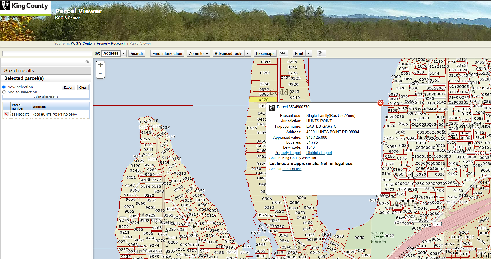
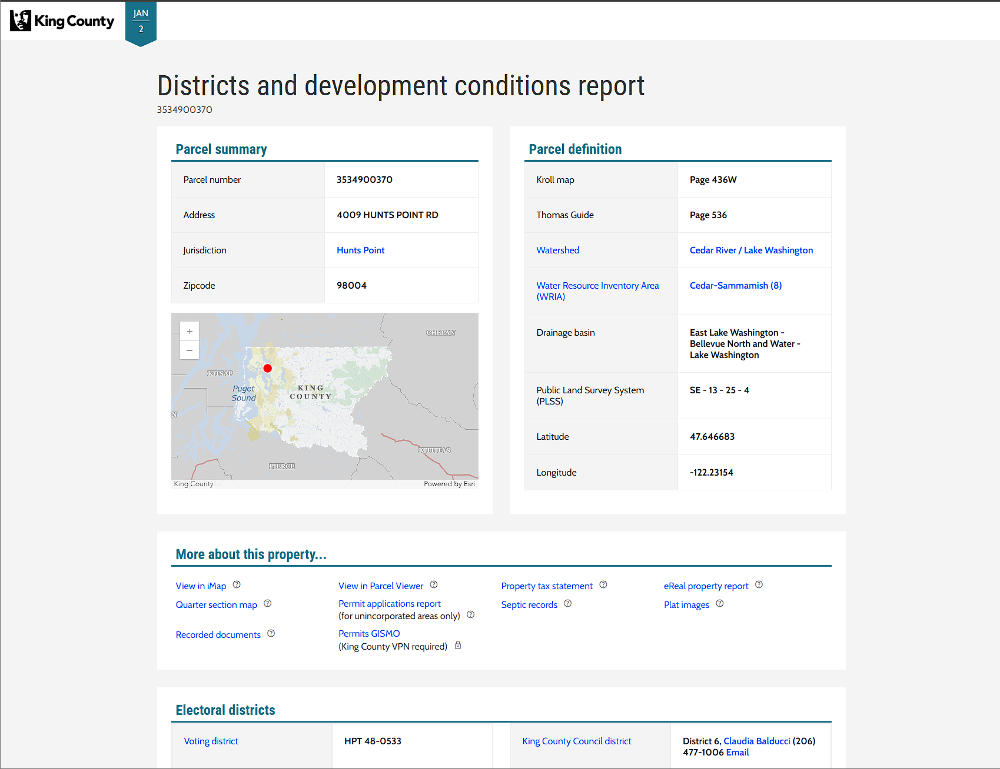
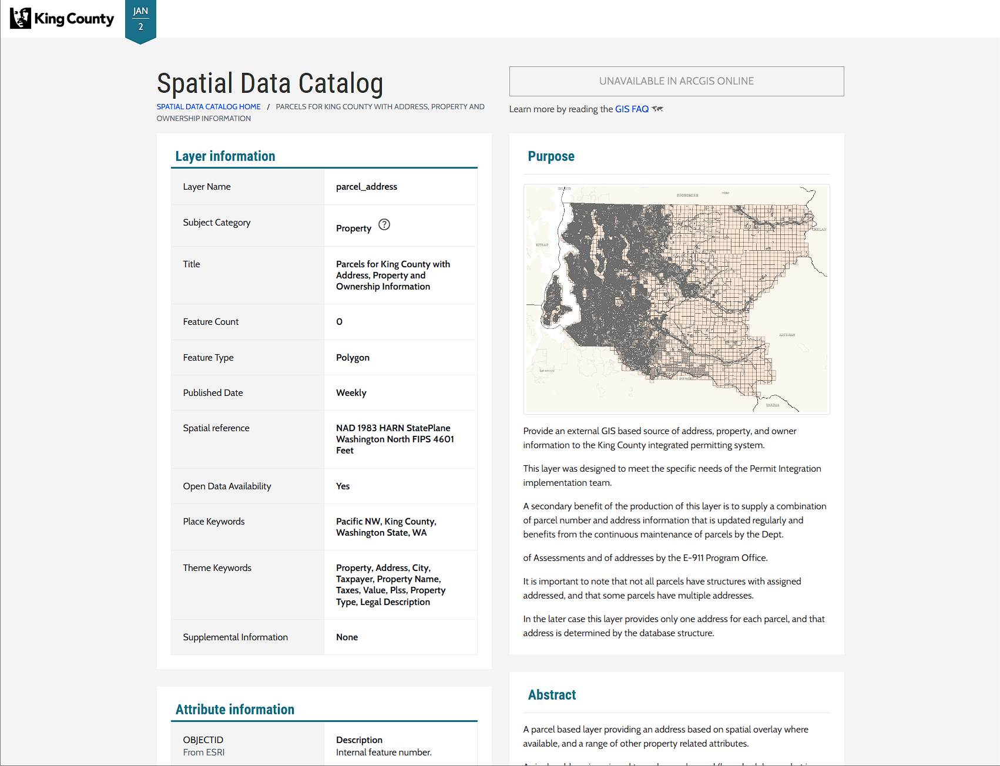

What is a Parcel Viewer?
A Parcel Viewer is an interactive map that allows you to find and inspect a specific piece of land. It is fundamentally a tool that allows you to explore properties, compare them, and identify specific properties of interest to you. Property parcels in Washington State are assigned a unique Id by the County Assessor’s office, this is often called a parcel number. The pieces of land outlined on the map in a Parcel Viewer have no legal meaning, rather there is a legal description of a parcel from which the County Assessor’s office can work out the boundaries of the parcel based on this description in combination with the plat document that defined the parcel and the most recent survey documents.
In Washington State the most recent survey is the truth as Professional Land Surveyors are licensed by the State to provide a specific, binding interpretation of the boundaries of a parcel. Although surveyors are not public employees their work is often treated as the position of the government by all the other parties involved in the process like the Assessor, Treasurer, Recorder, mortgage and title companies, and permitting departments. This is why it’s important for a Parcel Viewer to show you not just the outline of a parcel, but also the supporting materials that define the parcel including the plat documents and surveys related to it.
The Assessor maintains the parcels and handles splits, merges, and the creation of new parcels. They assess property taxes on a yearly basis for every parcel in their County in compliance with State law. The collection of these taxes is handled by the County Treasurer. Most property taxes are paid on a yearly or bi-year basis by mortgage companies, but you can pay property taxes directly if you prefer or if you don’t have a mortgage. Changes in ownership are filed with the County Recorder along with payment of Washington State’s Real Estate Excise Tax. Each of these actions results in a document getting filed to record the event, which can then be linked from the Parcel you’re viewing.
The coolest aspect of a Geographics Information System (GIS) is that you can find information and attributes related to a parcel based on its shape rather than some identifier like a number or a GUID. There are many different layers of information that can be added to a Parcel Viewer including hazards like flood zones, often a large polygon that overlaps many parcels, and political boundaries like school districts or voting precincts. The parcel has no direct link to the flood zones or the voting precincts and every layer is ignorant of the others. But we can use the outline of a parcel to see what layers overlap and then gather up the qualifying attributes of the overlapping layers to associate that information with our parcel.
Often showing this kind of related information from a spatial query directly on a map can be confusing and hard to parse due to the density of the information. There are a couple of methods to solve this problem in a Parcel Viewer like placing a small table inside of a popup that appears when you click on a parcel. Alternatively, you can link from your parcel to another app or web page that presents this information as a table or series of tables. This is often found when the Assessor or Recorder is in a separately elected position (with its own IT staff) distinct from the elected officials that control the County’s IT or GIS groups. Personally, my favorite solution is to take the left third of the screen and use it as a scrollable column of tables containing this related information like Zillow or Redfin. This allows you to maintain the context of the map, quick switching between Parcel’s of interest, while getting the detailed tabular information in a decent visual format.
I don’t want to belabor this but the most difficult aspect of building a good Parcel Viewer is maintaining the data. Certain layers like address points and parcels get updated on a daily or weekly basis and receive constant scrutiny. But other layers like environmental zones or political boundaries can become outdated due to staff turnover or political events. In software culture there are jokes about a lone bearded man maintaining a critical building block of computing that many larger and more powerful systems rely upon. The same sentiment applies to the maintenance of datasets in local government, there’s likely just one person, and if they retire before they can spend a couple years training a motivated replacement, it can significantly harm the quality of a Parcel Viewer.
In sum an ideal Parcel Viewer contains these aspects:
- A map 🗺️
- Exploration and Searching
- Links to related documents that legally define Parcels of interest like Plats and Surveys
- Property tax information
- Layers of related data queried by shape and displayed as tables for a specific Parcel
- Accurate and well-maintained data
If you’re working on a Parcel Viewer and it doesn’t meet these requirements then you’re cooked. Cheap challenges aside, this set of criteria is as practical and necessary today as it was when I started building Parcel Viewers a decade ago. An Evergreen-state, as it were.